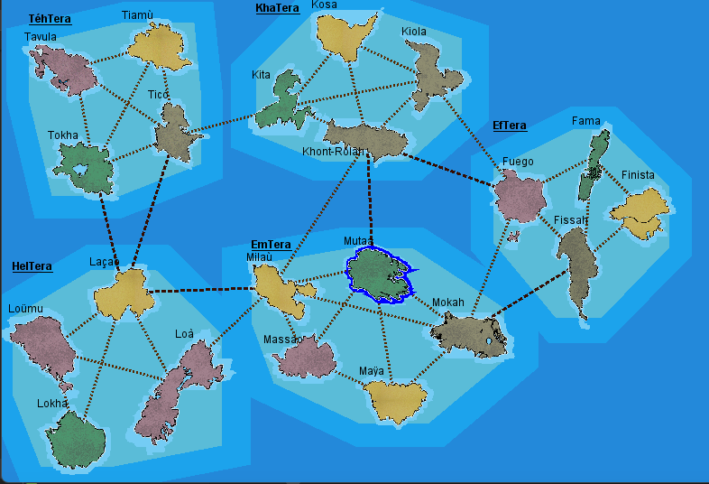

Graphe
Situation
Une SAE relié à d'autre SAE, celle-ci consisté à la réalisation d'un jeu basé sur les principes de graphes.
Durant cette SAE, nous étions en groupe de 5. Je n'ai donc pas était seule sur cette SAE, mais cela ne m'a pas empécher
de travailler sur plusieurs partie du travail
Durant cette SAE, j'ai travaillé un peu partout : Metier, IHM et même Controleur (même si ce n'est pas la partie la plus intéressante).
Dans cette SAE, on devait comprendre comment detecté certaine choses,
Vous voulez plus d'informations sur le jeu et ses fonctionnalités ? N'hésitez pas à lire le mode d'emploie alors
Lecture des données
Les données de la map était enregsitré dans un tableur qu'il fallait télécharger et compléter.
Nom des îles, leur positionnement, régions et liaison entre elle... Il fallait réfléchir au donnée rentré
et à l'ordre de celles-ci.
Dans cette SAE, contrairement a la SAE1.01, j'ai décidé d'utiliser uniquement des classes fournis de base par java :
En autre terme, je n'ai pas utiliser le Decomposeur fournis par l'IUT, mais plutot la méthodes split() afin de
m'habituer à différent outils qu'on pourrait me demander plus tard en entreprises.
Affichage des données
La lecture et enregistrement des données une fois fait, il était maintenant temps de les afficher sur une jolie frame.

Bien sur, ce n'est pas les seuls information affiché, et c'est un total de 7 classes que nous avions du crée,
tous servant une fonction bien précis afin de nous permettre un bonne communication avec le client.
Metier et fonctionnalités
Au final, c'est 20 classes qui permetteront le focntionnements du jeu.
Pour prouvez cette fonctionnalités, nous avons du crée un mode "debug", qui permet à l'utilisateur de tester toutes
les fonctionnalités implémenter. Ce mode a été crée pour une démo lors de notre orale.
Pour voir le code en entier, n'hésitez pas à aller sur répértoire git
SAE 2.01 .